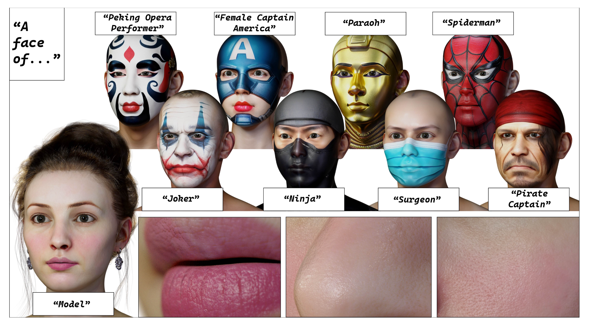
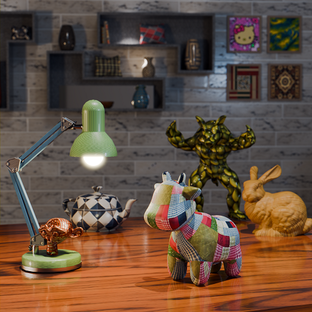
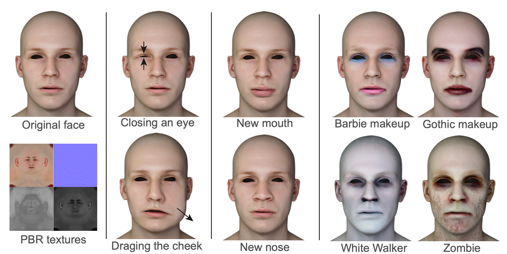
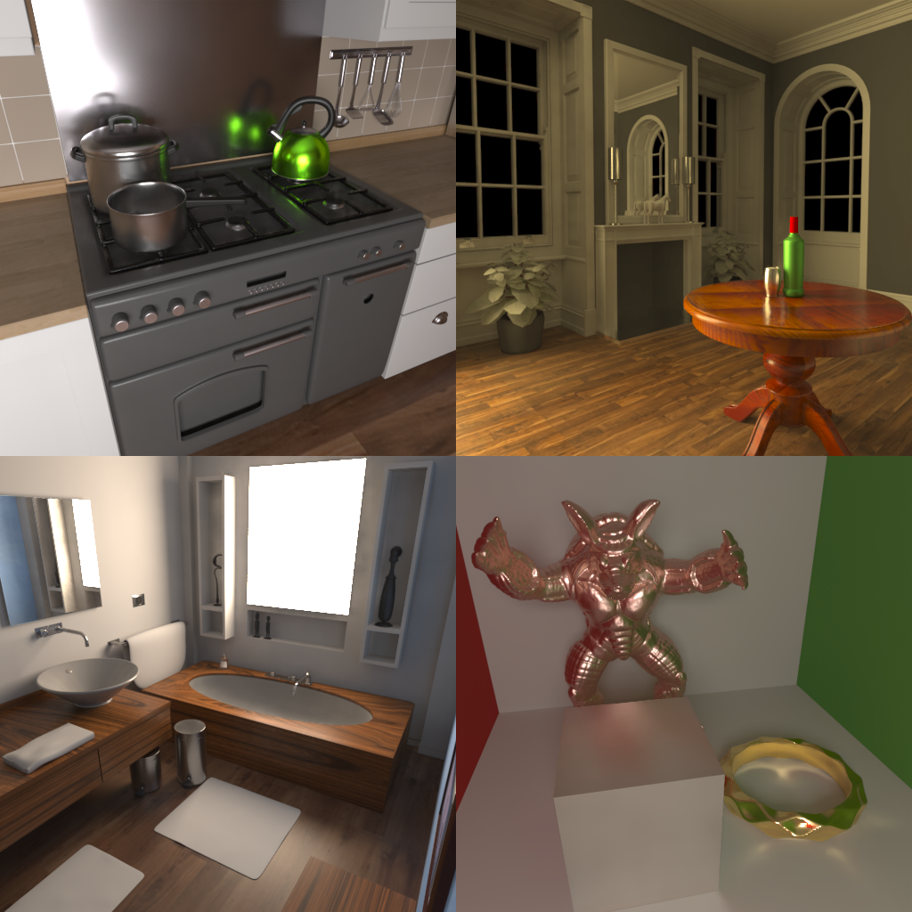
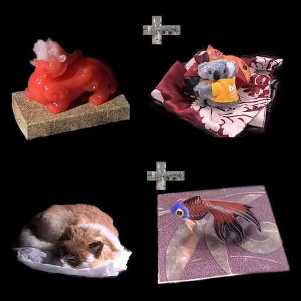
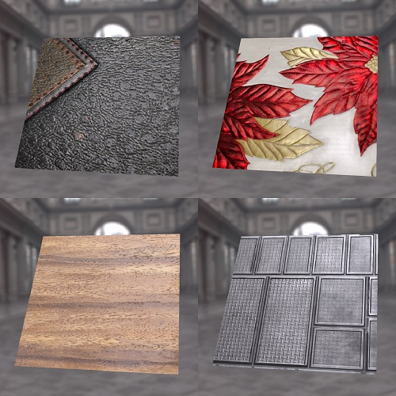
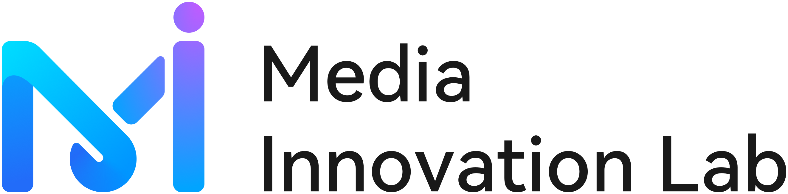
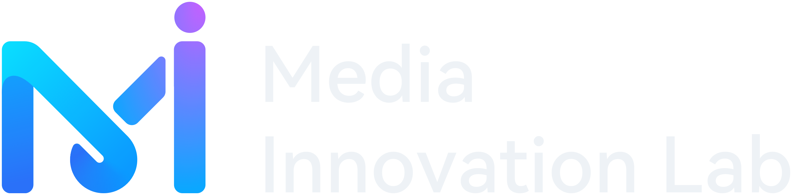

ControlFace: Few-Shot 3D Face Generation via a Controllable Diffusion Model Guided by Text and Images
IEEE International Conference on Multimedia & Expo (ICME), 2025
I am a computer graphics researcher. I received my Ph.D. in Computer Science from Tsinghua University in 2022, advised by Prof. Kun Xu, and my bachelor's degree in Computer Science from Nanjing University in 2017.
Previously, I was a Principal Engineer in the Top Minds Program at Huawei Cloud Media Innovation Lab, where I worked on generative 3D digital humans, diffusion-based material generation, AIGC-3D, and differentiable rendering. I am currently a 3D Generation Algorithm Engineer at X Square Robot.
Research interests
Appearance modeling, Physically based rendering, Neural rendering, Differentiable rendering, 3D generative modeling
Reviewer for SIGGRAPH 2022/2025, SIGGRAPH Asia 2023/2025, Eurographics, Pacific Graphics, The Visual Computer, Journal of Computer-Aided Design & Computer Graphics

IEEE International Conference on Multimedia & Expo (ICME), 2025

IEEE International Conference on Multimedia & Expo (ICME), 2025

IEEE International Conference on Acoustics, Speech and Signal Processing (ICASSP), 2025

IEEE Transactions on Visualization and Computer Graphics (TVCG), 2022

ACM Transactions on Graphics (Proceedings of SIGGRAPH Asia), 2020
PDF (Low Resolution) PDF (High Resolution) Supplementary Video Slides Code BibTeX

ACM Transactions on Graphics (Proceedings of SIGGRAPH), 2019
PDF (Low Resolution) PDF (High Resolution) Supplementary Video Slides Code BibTeX
基于深度学习的真实感渲染研究
Supervisor: Kun Xu
(基于学习的)高逼真半透明材质的渲染方法
Supervisor: Kun Xu, Jie Guo
2025-Present
3D Generation Algorithm Engineer
3D generation algorithm engineering and system development for embodied robotics applications.
2022-2025
Principal Engineer, Top Minds (天才少年)
Worked on generative 3D digital humans, diffusion-based material generation, AIGC-3D, and differentiable rendering.


2019.10-2020.5
Research Intern
Conducted research on neural relighting with Dr. Guojun Chen, Dr. Yue Dong, and Dr. Xin Tong.
2019.7-2019.8
Research Intern
Conducted research on 3D face reconstruction with Dr. Haozhi Huang.
2018.8-2019.5
Research Intern
Conducted research on appearance modeling with Dr. Yue Dong and Dr. Xin Tong.
2017.7-2017.9
Research Intern
Conducted research on facial recovery and rendering with Dr. Liqian Ma.